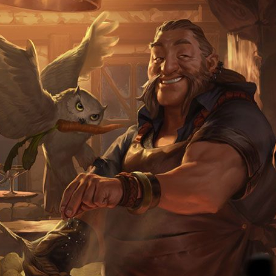
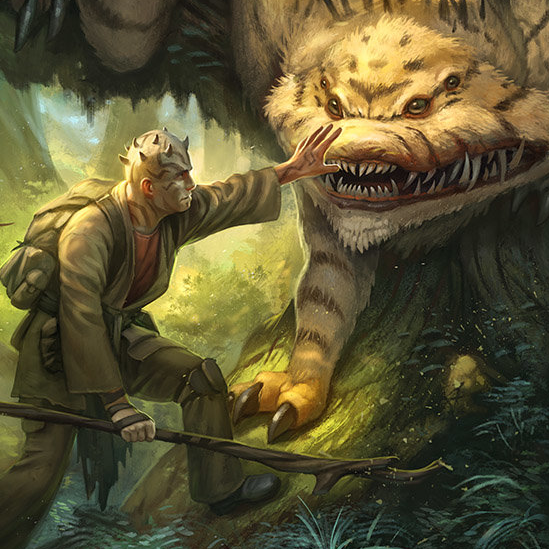
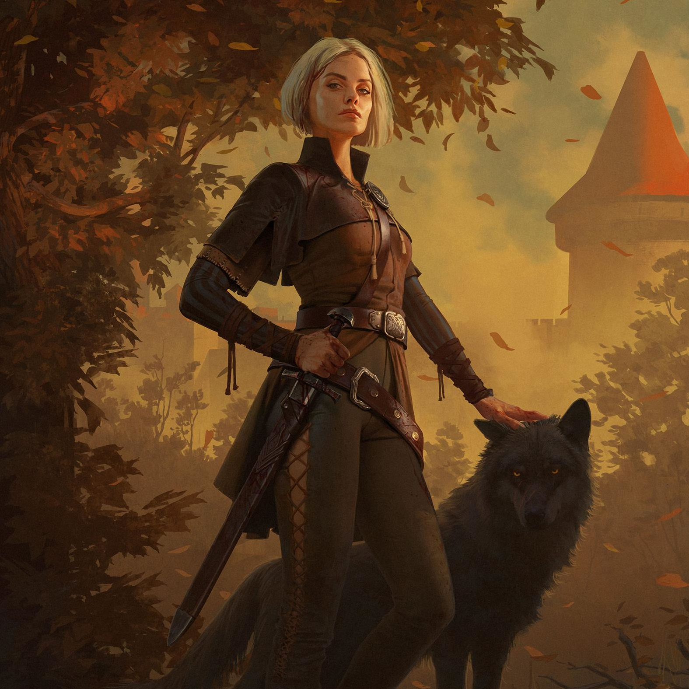

"Rest your legs, weary traveller, at Cafe Chimera! Take a break from slaying monsters and enjoy a hot mug of tea while surrounded by the fluffy offspring of your greatest foes!"
- Seamus Leadhand, Owner and
Proprieter of the Chimera Cafe
Who Are We?
Cafe Chimera is a shelter for all creatures as well as a cafe. We have been serving hot beverages and rescuing creatures in need for over a hundred years. While you enjoy a mug of our finest tea or mulled wine, snuggle up next to a Chimera cub or read a book curled up in the wings of a griffin.
Meet The Team!

Seamus Leadhand
Owner
Seamus's great grandfather, Benj Leadhand, started Cafe Chimera with the dream of bringin animal lovers and creatures in need together. Seamus is keeping that dream alive as the current proprietor. He rarely goes anywhere without Turner, his owl companion.

Eldrin Yllara
Beastmaster
To the residents of Chimera Cafe, Eldrin is like a mother. He takes care of all of our creatures, and is responsible for rescuing over a dozen of them over the course of his many journeys.

Tasha Doran
Creature Rescue
Tasha and her wolf companion, Shadow, travel the world rescuing creatures from underground fighting rings, pelt traders, and everything in between. The two of them have brought over 200 abused or neglected creatures back to Cafe Chimera.